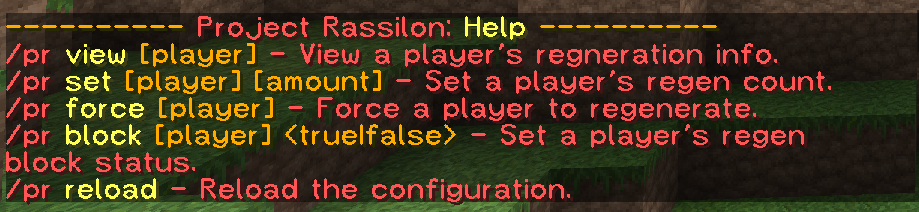

Project Rassilon
Become a Time Lord and regenerate!
Project maintained by Squawkers13
Hosted on GitHub Pages — Theme by mattgraham
Commands
There are two commands- /pr and /regen, each with different sub-commands.
All commands are case-insensitive.
/pr - The plugin's base command.
- /pr - View the plugin's version.
- /pr view [player] - View a player's regeneration info.
- /pr set [player] [amount] - Set a player's regeneration count.
- /pr force [player] - Force a player to regenerate.
- /pr block [player] - Set a player's regeneration block status.
- /pr reload - Reload the configuration.
/regen - View and manage regeneration.
This command can only be used by a player.
- /regen - View your regeneration info.
- /regen force - Force regeneration.
- /regen block - Block your next regeneration.
Both of these commands have in-game help menus.
